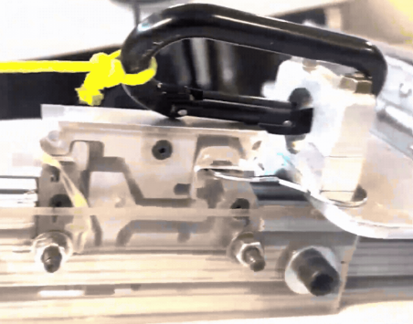
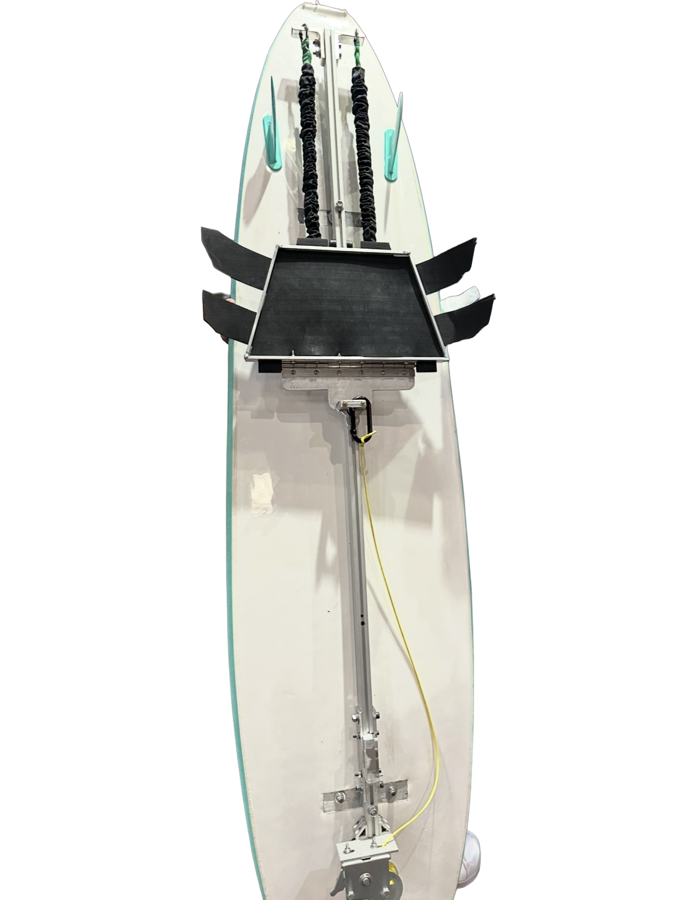
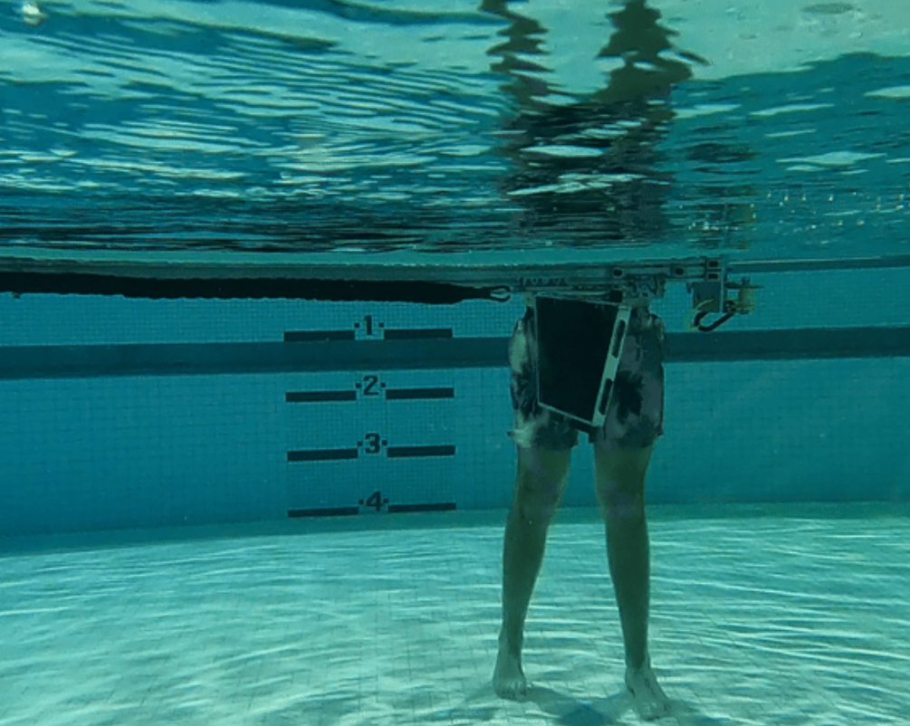
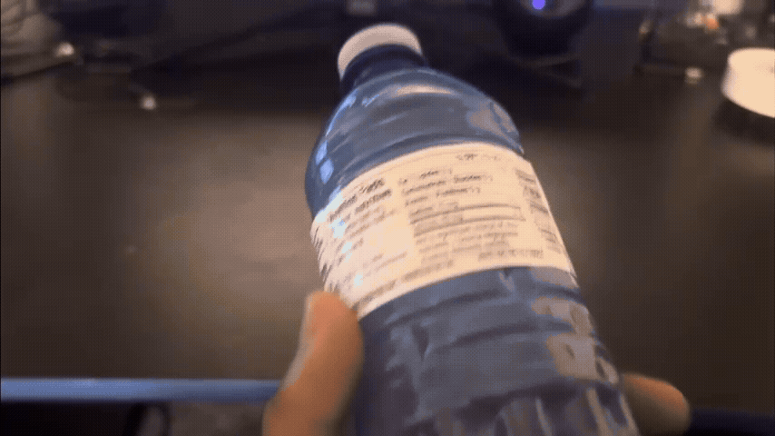
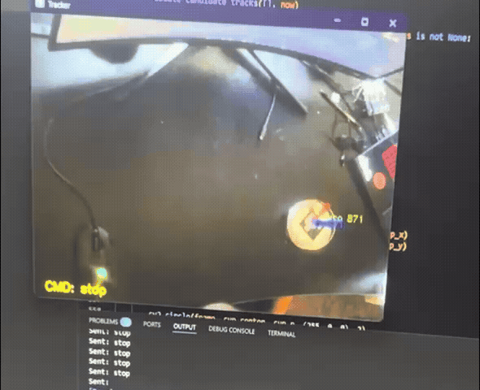
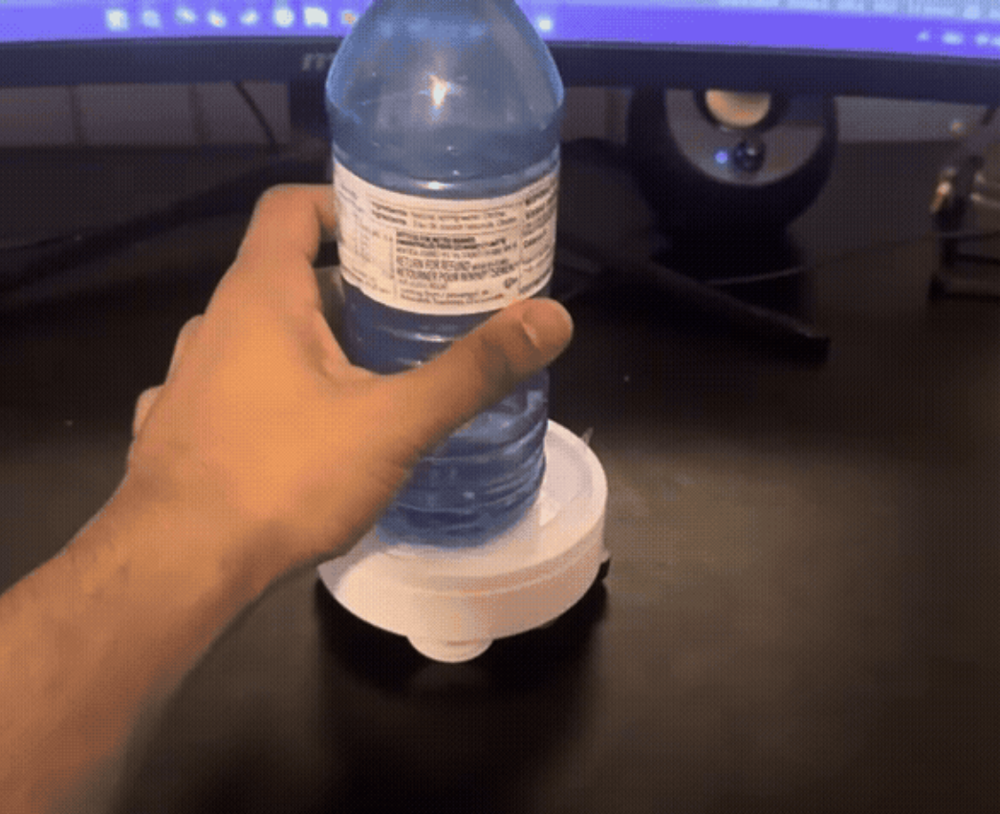
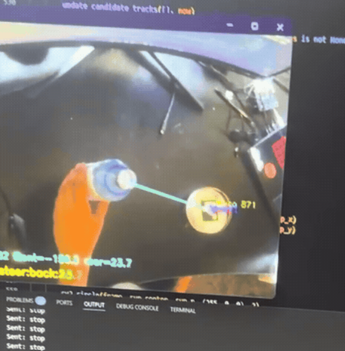

Surfboard Propulsion System
A fully mechanical system designed to assist beginner surfers with catching waves.
Read MorePortfolio
I'm a mechanical engineer with a passion for developing robotic systems, prototyping new ideas, and turning concepts into functional hardware.
Featured Work



A fully mechanical system designed to assist beginner surfers with catching waves.
Read More



A face tracking turret that automatically locks onto faces and fires when the user loses a video game.
Read More


Designed after robot character 'Bender' from Futarama, this robot serves as a more interactive alternative to traditional dice, playing custom audio files and reacting to the user's roll in real time.
Read More

A motorized coaster that dynamically positions itself underneath cups or waterbottles before the user places them down, saving your tablespace before it gets dirty.
Read MoreOverview: A compact propulsion concept designed to explore efficient motion for a surfboard-based platform.
Tools Used: SolidWorks, Arduino, prototyping tools, and basic fabrication methods.
Process: The design focused on balancing compact packaging, mechanical reliability, and testable performance.
Result: The project produced a practical proof-of-concept that highlighted key design tradeoffs for future iterations.
Overview: A mechanical system built to support alignment and targeting through controlled motion.
Tools Used: CAD modeling, 3D printing, analysis tools, and iterative prototyping.
Process: The work emphasized mechanism layout, structural stability, and refinement based on testing feedback.
Result: The final build improved repeatability and demonstrated the value of rapid iteration.
Overview: An automation platform that combines motion, sensing, and physical interaction in a compact form.
Tools Used: Microcontrollers, sensors, CAD, and assembly tools.
Process: The project integrated electronics and hardware while refining the motion logic through testing.
Result: The completed robot delivered a reliable, repeatable experience and helped sharpen mechatronics skills.
Overview: A hands-on build focused on translating a creative concept into a working prototype.
Tools Used: Fabrication tools, rapid prototyping, and performance testing.
Process: The workflow emphasized design validation, adjustment, and practical manufacturing decisions.
Result: The prototype evolved into a functional, testable demonstration of engineering problem-solving.